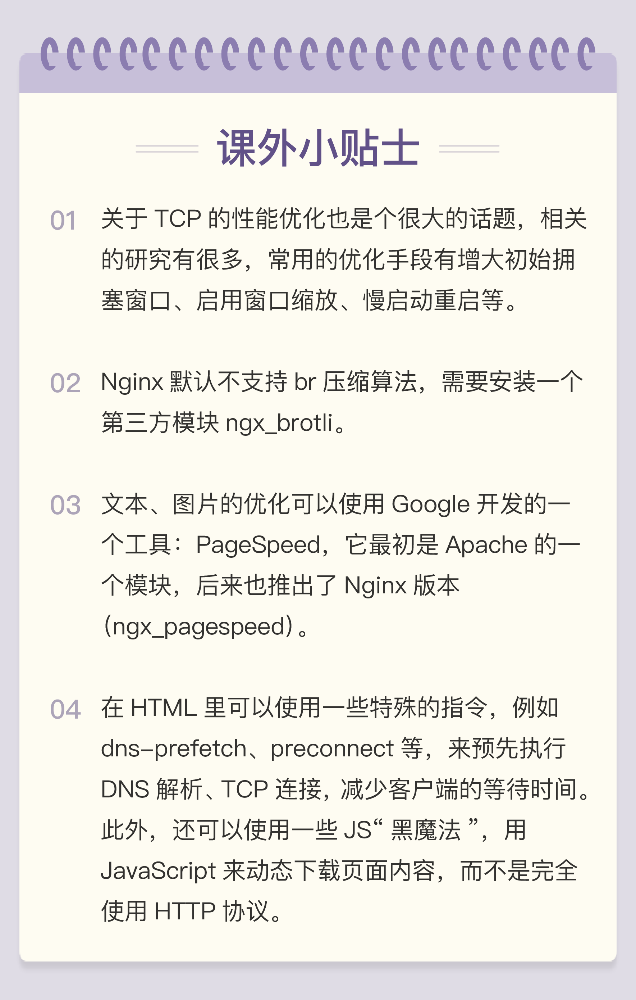

- 00 开篇词｜To Be a HTTP Hero.md.html
- 01 时势与英雄：HTTP的前世今生.md.html
- 02 HTTP是什么？HTTP又不是什么？.md.html
- 03 HTTP世界全览（上）：与HTTP相关的各种概念.md.html
- 04 HTTP世界全览（下）：与HTTP相关的各种协议.md.html
- 05 常说的“四层”和“七层”到底是什么？“五层”“六层”哪去了？.md.html
- 06 域名里有哪些门道？.md.html
- 07 自己动手，搭建HTTP实验环境.md.html
- 08 键入网址再按下回车，后面究竟发生了什么？.md.html
- 09 HTTP报文是什么样子的？.md.html
- 10 应该如何理解请求方法？.md.html
- 11 你能写出正确的网址吗？.md.html
- 12 响应状态码该怎么用？.md.html
- 13 HTTP有哪些特点？.md.html
- 14 HTTP有哪些优点？又有哪些缺点？.md.html
- 15 海纳百川：HTTP的实体数据.md.html
- 16 把大象装进冰箱：HTTP传输大文件的方法.md.html
- 17 排队也要讲效率：HTTP的连接管理.md.html
- 18 四通八达：HTTP的重定向和跳转.md.html
- 19 让我知道你是谁：HTTP的Cookie机制.md.html
- 20 生鲜速递：HTTP的缓存控制.md.html
- 21 良心中间商：HTTP的代理服务.md.html
- 22 冷链周转：HTTP的缓存代理.md.html
- 23 HTTPS是什么？SSLTLS又是什么？.md.html
- 24 固若金汤的根本（上）：对称加密与非对称加密.md.html
- 25 固若金汤的根本（下）：数字签名与证书.md.html
- 26 信任始于握手：TLS1.2连接过程解析.md.html
- 27 更好更快的握手：TLS1.3特性解析.md.html
- 28 连接太慢该怎么办：HTTPS的优化.md.html
- 29 我应该迁移到HTTPS吗？.md.html
- 30 时代之风（上）：HTTP2特性概览.md.html
- 31 时代之风（下）：HTTP2内核剖析.md.html
- 32 未来之路：HTTP3展望.md.html
- 33 我应该迁移到HTTP2吗？.md.html
- 34 Nginx：高性能的Web服务器.md.html
- 35 OpenResty：更灵活的Web服务器.md.html
- 36 WAF：保护我们的网络服务.md.html
- 37 CDN：加速我们的网络服务.md.html
- 38 WebSocket：沙盒里的TCP.md.html
- 39 HTTP性能优化面面观（上）.md.html
- 40 HTTP性能优化面面观（下）.md.html
- 结束语 做兴趣使然的Hero.md.html
40 HTTP性能优化面面观（下）
今天我们继续上次的话题，看看 HTTP 性能优化有哪些行之有效的手段。
上一讲里我说到了，在整个 HTTP 系统里有三个可优化的环节，分别是服务器、客户端和传输链路（“第一公里”和“中间一公里”）。但因为我们是无法完全控制客户端的，所以实际上的优化工作通常是在服务器端。这里又可以细分为后端和前端，后端是指网站的后台服务，而前端就是 HTML、CSS、图片等展现在客户端的代码和数据。
知道了大致的方向，HTTP 性能优化具体应该怎么做呢？
总的来说，任何计算机系统的优化都可以分成这么几类：硬件软件、内部外部、花钱不花钱。
投资购买现成的硬件最简单的优化方式，比如换上更强的 CPU、更快的网卡、更大的带宽、更多的服务器，效果也会“立竿见影”，直接提升网站的服务能力，也就实现了 HTTP 优化。
另外，花钱购买外部的软件或者服务也是一种行之有效的优化方式，最“物有所值”的应该算是 CDN 了（参见[第 37 讲]）。CDN 专注于网络内容交付，帮助网站解决“中间一公里”的问题，还有很多其他非常专业的优化功能。把网站交给 CDN 运营，就好像是“让网站坐上了喷气飞机”，能够直达用户，几乎不需要费什么力气就能够达成很好的优化效果。
不过这些“花钱”的手段实在是太没有“技术含量”了，属于“懒人”（无贬义）的做法，所以我就不再细说，接下来重点就讲讲在网站内部、“不花钱”的软件优化。
我把这方面的 HTTP 性能优化概括为三个关键词：开源、节流、缓存。
开源
这个“开源”可不是 Open Source，而是指抓“源头”，开发网站服务器自身的潜力，在现有条件不变的情况下尽量挖掘出更多的服务能力。
首先，我们应该选用高性能的 Web 服务器，最佳选择当然就是 Nginx/OpenResty 了，尽量不要选择基于 Java、Python、Ruby 的其他服务器，它们用来做后面的业务逻辑服务器更好。利用 Nginx 强大的反向代理能力实现“动静分离”，动态页面交给 Tomcat、Django、Rails，图片、样式表等静态资源交给 Nginx。
Nginx 或者 OpenResty 自身也有很多配置参数可以用来进一步调优，举几个例子，比如说禁用负载均衡锁、增大连接池，绑定 CPU 等等，相关的资料有很多。
特别要说的是，对于 HTTP 协议一定要启用长连接。在[第 39 讲]里你也看到了，TCP 和 SSL 建立新连接的成本是非常高的，有可能会占到客户端总延迟的一半以上。长连接虽然不能优化连接握手，但可以把成本“均摊”到多次请求里，这样只有第一次请求会有延迟，之后的请求就不会有连接延迟，总体的延迟也就降低了。
另外，在现代操作系统上都已经支持 TCP 的新特性“TCP Fast Open”（Win10、iOS9、Linux 4.1），它的效果类似 TLS 的“False Start”，可以在初次握手的时候就传输数据，也就是 0-RTT，所以我们应该尽可能在操作系统和 Nginx 里开启这个特性，减少外网和内网里的握手延迟。
下面给出一个简短的 Nginx 配置示例，启用了长连接等优化参数，实现了动静分离：
server {
listen 80 deferred reuseport backlog=4096 fastopen=1024;
keepalive_timeout 60;
keepalive_requests 10000;
location ~* \.(png)$ {
root /var/images/png/;
}
location ~* \.(php)$ {
proxy_pass http://php_back_end;
}
}
节流
“节流”是指减少客户端和服务器之间收发的数据量，在有限的带宽里传输更多的内容。
“节流”最基本的做法就是使用 HTTP 协议内置的“数据压缩”编码，不仅可以选择标准的 gzip，还可以积极尝试新的压缩算法 br，它有更好的压缩效果。
不过在数据压缩的时候应当注意选择适当的压缩率，不要追求最高压缩比，否则会耗费服务器的计算资源，增加响应时间，降低服务能力，反而会“得不偿失”。
gzip 和 br 是通用的压缩算法，对于 HTTP 协议传输的各种格式数据，我们还可以有针对性地采用特殊的压缩方式。
HTML/CSS/JS 属于纯文本，就可以采用特殊的“压缩”，去掉源码里多余的空格、换行、注释等元素。这样“压缩”之后的文本虽然看起来很混乱，对“人类”不友好，但计算机仍然能够毫无障碍地阅读，不影响浏览器上的运行效果。
图片在 HTTP 传输里占有非常高的比例，虽然它本身已经被压缩过了，不能被 gzip、br 处理，但仍然有优化的空间。比如说，去除图片里的拍摄时间、地点、机型等元数据，适当降低分辨率，缩小尺寸。图片的格式也很关键，尽量选择高压缩率的格式，有损格式应该用 JPEG，无损格式应该用 Webp 格式。
对于小文本或者小图片，还有一种叫做“资源合并”（Concatenation）的优化方式，就是把许多小资源合并成一个大资源，用一个请求全下载到客户端，然后客户端再用 JS、CSS 切分后使用，好处是节省了请求次数，但缺点是处理比较麻烦。
刚才说的几种数据压缩都是针对的 HTTP 报文里的 body，在 HTTP/1 里没有办法可以压缩 header，但我们也可以采取一些手段来减少 header 的大小，不必要的字段就尽量不发（例如 Server、X-Powered-By）。
网站经常会使用 Cookie 来记录用户的数据，浏览器访问网站时每次都会带上 Cookie，冗余度很高。所以应当少使用 Cookie，减少 Cookie 记录的数据量，总使用 domain 和 path 属性限定 Cookie 的作用域，尽可能减少 Cookie 的传输。如果客户端是现代浏览器，还可以使用 HTML5 里定义的 Web Local Storage，避免使用 Cookie。
压缩之外，“节流”还有两个优化点，就是域名和重定向。
DNS 解析域名会耗费不少的时间，如果网站拥有多个域名，那么域名解析获取 IP 地址就是一个不小的成本，所以应当适当“收缩”域名，限制在两三个左右，减少解析完整域名所需的时间，让客户端尽快从系统缓存里获取解析结果。
重定向引发的客户端延迟也很高，它不仅增加了一次请求往返，还有可能导致新域名的 DNS 解析，是 HTTP 前端性能优化的“大忌”。除非必要，应当尽量不使用重定向，或者使用 Web 服务器的“内部重定向”。
缓存
在[第 20 讲]里，我就说到了“缓存”，它不仅是 HTTP，也是任何计算机系统性能优化的“法宝”，把它和上面的“开源”“节流”搭配起来应用于传输链路，就能够让 HTTP 的性能再上一个台阶。
在“第零公里”，也就是网站系统内部，可以使用 Memcache、Redis、Varnish 等专门的缓存服务，把计算的中间结果和资源存储在内存或者硬盘里，Web 服务器首先检查缓存系统，如果有数据就立即返回给客户端，省去了访问后台服务的时间。
在“中间一公里”，缓存更是性能优化的重要手段，CDN 的网络加速功能就是建立在缓存的基础之上的，可以这么说，如果没有缓存，那就没有 CDN。
利用好缓存功能的关键是理解它的工作原理（参见[第 20 讲]和[第 22 讲]），为每个资源都添加 ETag 和 Last-modified 字段，再用 Cache-Control、Expires 设置好缓存控制属性。
其中最基本的是 max-age 有效期，标记资源可缓存的时间。对于图片、CSS 等静态资源可以设置较长的时间，比如一天或者一个月，对于动态资源，除非是实时性非常高，也可以设置一个较短的时间，比如 1 秒或者 5 秒。
这样一旦资源到达客户端，就会被缓存起来，在有效期内都不会再向服务器发送请求，也就是：“没有请求的请求，才是最快的请求。”
HTTP/2
在“开源”“节流”和“缓存”这三大策略之外，HTTP 性能优化还有一个选择，那就是把协议由 HTTP/1 升级到 HTTP/2。
通过“飞翔篇”的学习，你已经知道了 HTTP/2 的很多优点，它消除了应用层的队头阻塞，拥有头部压缩、二进制帧、多路复用、流量控制、服务器推送等许多新特性，大幅度提升了 HTTP 的传输效率。
实际上这些特性也是在“开源”和“节流”这两点上做文章，但因为这些都已经内置在了协议内，所以只要换上 HTTP/2，网站就能够立刻获得显著的性能提升。
不过你要注意，一些在 HTTP/1 里的优化手段到了 HTTP/2 里会有“反效果”。
对于 HTTP/2 来说，一个域名使用一个 TCP 连接才能够获得最佳性能，如果开多个域名，就会浪费带宽和服务器资源，也会降低 HTTP/2 的效率，所以“域名收缩”在 HTTP/2 里是必须要做的。
“资源合并”在 HTTP/1 里减少了多次请求的成本，但在 HTTP/2 里因为有头部压缩和多路复用，传输小文件的成本很低，所以合并就失去了意义。而且“资源合并”还有一个缺点，就是降低了缓存的可用性，只要一个小文件更新，整个缓存就完全失效，必须重新下载。
所以在现在的大带宽和 CDN 应用场景下，应当尽量少用资源合并（JS、CSS 图片合并，数据内嵌），让资源的粒度尽可能地小，才能更好地发挥缓存的作用。
小结
- 花钱购买硬件、软件或者服务可以直接提升网站的服务能力，其中最有价值的是 CDN；
- 不花钱也可以优化 HTTP，三个关键词是“开源”“节流”和“缓存”；
- 后端应该选用高性能的 Web 服务器，开启长连接，提升 TCP 的传输效率；
- 前端应该启用 gzip、br 压缩，减小文本、图片的体积，尽量少传不必要的头字段；
- 缓存是无论何时都不能忘记的性能优化利器，应该总使用 Etag 或 Last-modified 字段标记资源；
- 升级到 HTTP/2 能够直接获得许多方面的性能提升，但要留意一些 HTTP/1 的“反模式”。
到这里，专栏的全部课程就学完了，在这三个月的时间里你是否有了很多的收获呢？
接下来，就请在广阔的网络世界里去实践这些知识吧，祝你成功！
